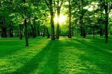
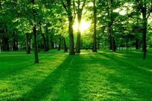

The Baganda, in whose territory this British settlement was located, then translated "Hill of the Impala" as Akasozi ke'Empala. This was then shortened to K'empala and finally Kampala. Kasozi means "hill", ke "of", and empala the plural of "impala". Hence the name "Kampala" came to refer to this initial British colonial settlement that would later on spread out from the occupied Old Kampala hill near the pre-existing Kibuga (capital) of the Buganda Kingdom.
| Company | Contract | Country |
|---|---|---|
| Alfreds Futterkiste | Maria Anders | Germany |
| Centro Commercial Moctezuma | Francisco Chang | Republic of Mexico |
| Microwave | viany | Uganda |
| solar Today | Sarah | Kenya |
 


Hi.
Once upon a time, there lived a man called joeseph.
He had a wife called mary
and they lived in a small
town of Bethlehem.
For God so loved the World that He gave his only son
Jesus Christ that whoever believes
in him should not
perish but have eternal life.
The Baganda, in whose territory this British settlement was located, then translated "Hill of the Impala" as Akasozi ke'Empala. This was then shortened to K'empala and finally Kampala. Kasozi means "hill", ke "of", and empala the plural of "impala". Hence the name "Kampala" came to refer to this initial British colonial settlement that would later on spread out from the occupied Old Kampala hill near the pre-existing Kibuga (capital) of the Buganda Kingdom.
The Baganda, in whose territory this British settlement was located, then translated "Hill of the Impala" as Akasozi ke'Empala. This was then shortened to K'empala and finally Kampala. Kasozi means "hill", ke "of", and empala the plural of "impala". Hence the name "Kampala" came to refer to this initial British colonial settlement that would later on spread out from the occupied Old Kampala hill near the pre-existing Kibuga (capital) of the Buganda Kingdom.
The Baganda, in whose territory this British settlement was located, then translated "Hill of the Impala" as Akasozi ke'Empala. This was then shortened to K'empala and finally Kampala. Kasozi means "hill", ke "of", and empala the plural of "impala". Hence the name "Kampala" came to refer to this initial British colonial settlement that would later on spread out from the occupied Old Kampala hill near the pre-existing Kibuga (capital) of the Buganda Kingdom.
In my younger and more vulnerable years my father gave me some advice that I've been turning over in my mind ever since. 'Whenever you feel like criticizing anyone,' he told me, 'just remember that all the people in this world haven't had the advantages that you've had.'Forests form distinctly different biomes at different latitudes and elevations, and with different precipitation and evapotranspiration rates.[9] These biomes include boreal forests in subarctic climates, tropical moist forests and tropical dry forests around the Equator, and temperate forests at the middle latitudes. Forests form in areas of the Earth with high rainfall, while drier conditions produce a transition to savanna. However, in areas with intermediate rainfall levels, forest transitions to savanna rapidly when the percentage of land that is covered by trees drops below 40 to 45 percent.[10] Research conducted in the Amazon rainforest shows that trees can alter rainfall rates across a region, releasing water from their leaves in anticipation of seasonal rains to trigger the wet season early. Because of this, seasonal rainfall in the Amazon begins two to three months earlier than the climate would otherwise allow.[11][12] Deforestation in the Amazon and anthropogenic climate change hold the potential to interfere with this process, causing the forest to pass a threshold where it transitions into savanna.[13] Deforestation threatens many forest ecosystems. Deforestation occurs when humans remove trees from a forested area by cutting or burning, either to harvest timber or to make way for farming. Most deforestation today occurs in tropical forests. The vast majority of this deforestation is because of the production of four commodities: wood, beef, soy, and palm oil.[14] Over the past 2,000 years, the area of land covered by forest in Europe has been reduced from 80% to 34%. Large areas of forest have also been cleared in China and in the eastern United States,[15] in which only 0.1% of land was left undisturbed.[16] Almost half of Earth's forest area (49 percent) is relatively intact, while 9 percent is found in fragments with little or no connectivity. Tropical rainforests and boreal coniferous forests are the least fragmented, whereas subtropical dry forests and temperate oceanic forests are among the most fragmented. Roughly 80 percent of the world's forest area is found in patches larger than 1 million hectares (2.5 million acres). The remaining 20 percent is located in more than 34 million patches around the world – the vast majority less than 1,000 hectares (2,500 acres) in size.[8]
Deforestation threatens many forest ecosystems. Deforestation occurs when humans remove trees from a forested area by cutting or burning, either to harvest timber or to make way for farming. Most deforestation today occurs in tropical forests. The vast majority of this deforestation is because of the production of four commodities: wood, beef, soy, and palm oil.[14] Over the past 2,000 years, the area of land covered by forest in Europe has been reduced from 80% to 34%. Large areas of forest have also been cleared in China and in the eastern United States,[15] in which only 0.1% of land was left undisturbed.[16] Almost half of Earth's forest area (49 percent) is relatively intact, while 9 percent is found in fragments with little or no connectivity. Tropical rainforests and boreal coniferous forests are the least fragmented, whereas subtropical dry forests and temperate oceanic forests are among the most fragmented. Roughly 80 percent of the world's forest area is found in patches larger than 1 million hectares (2.5 million acres). The remaining 20 percent is located in more than 34 million patches around the world – the vast majority less than 1,000 hectares (2,500 acres) in size.[8]
Deforestation threatens many forest ecosystems. Deforestation occurs when humans remove trees from a forested area by cutting or burning, either to harvest timber or to make way for farming. Most deforestation today occurs in tropical forests. The vast majority of this deforestation is because of the production of four commodities: wood, beef, soy, and palm oil.[14] Over the past 2,000 years, the area of land covered by forest in Europe has been reduced from 80% to 34%. Large areas of forest have also been cleared in China and in the eastern United States,[15] in which only 0.1% of land was left undisturbed.[16] Almost half of Earth's forest area (49 percent) is relatively intact, while 9 percent is found in fragments with little or no connectivity. Tropical rainforests and boreal coniferous forests are the least fragmented, whereas subtropical dry forests and temperate oceanic forests are among the most fragmented. Roughly 80 percent of the world's forest area is found in patches larger than 1 million hectares (2.5 million acres). The remaining 20 percent is located in more than 34 million patches around the world – the vast majority less than 1,000 hectares (2,500 acres) in size.[8]